Data publicării: 09.10.2018
Autor articol: Mircea Vaida
1. Funcţionalităţile specifice aplicaţiei folosind modelul Belbin
1.1 Structura aplicatiei
Scopul principal al aplicației constituie un studiu elaborat asupra modului în care se pot crea echipele compatibile de lucru, şi modul în care se realizează generarea automată a echipelor compatibile şi managementul lor, pe baza tipologiilor de personalitate ai membrilor unei grupe.
Diagrama use_case a plicatiei dorita a fi implementata este:
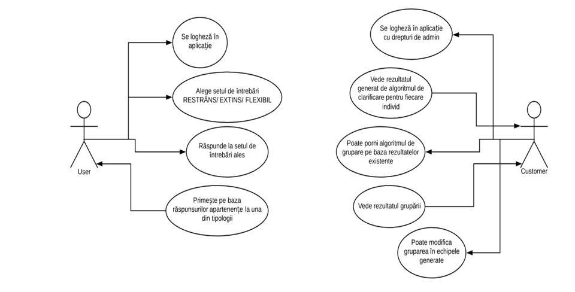
Informaţiile legate de tipologiile de personalitate se obţin printr-un studiu al individului prin Teoria Rolurilor de Echipă Belbin.
Aceste elemente au fost prezentate detaliat in precedentul raport.
In sinteza legat de modelul Belbin avem :
- roluri orientate către acţiune: Shaper, Implementer, Completer Finisher
- roluri orientate către relaţii: Coordinator, Teamworker, Resource Investigator
- roluri cerebrale: Plant, Monitor Evaluator, Specialist
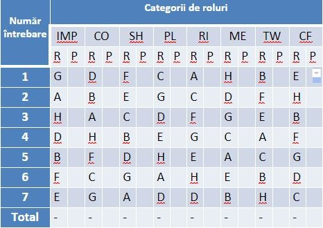
Se folosesc:
- 7 sectiuni
- 8 afirmatii
- Alocare 10 puncte pe cele 8 afirmatii
Unde:
- R= raspunsul de la fiecare intrebare
- P= punctajul acordat fiecarui raspuns
2. Descrierea aplicatiei dedicate
S-a incercat a dezvolta o aplicatie folosind echipe cu task-uri diferie.
Membrii echipelor au fost alesi pornind de la testele MBTI si enneagrama.
2.1 Arhitectura generala a aplicatiei
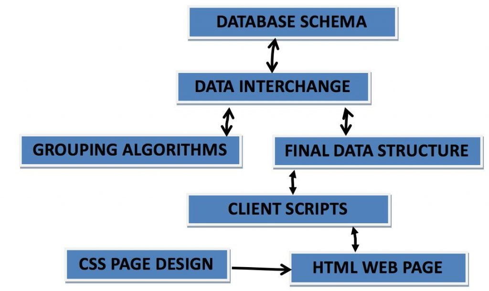
- DATABASE SCHEMA: este reprezentat de tabelele din cadrul schemei bazei de date, ce va fi prezentata sectiunea urmatoare. Se va utiliza o Baza de Date SQL
-
DATA INTERCHANGE: Zona din server unde se va realiza schimbul de informatii cu Baza de Date. Se va realiza in cadrul serverului o copie a informatiei din cadrul Bazei de Date SQL, urmand ca aceste informatii sa fie prelucrate de catre server
- Recomand folosirea unui framework care va genera automat o legatura cu Baza de Date, si care va integra in mod automat un model de autentificare care ar fi destul de dificil de construit de la 0 pentru un model API
- Daca se vor folosi interogari, recomand ca acestea sa fie realizate in partea de server iar datele se fie stocate intr-un DataSet. Recomand ca interogarile sa fie gandite astfel incat informatiile rezultate sa fie folosite de toti utilizatori, iar limitele si restrictile sa se construiasca in server deoarece altfel aplicatia va utiliza multa memorie aiurea generanduse un DataSet pentru fiecare user
- DataSetb: o copie a Bazei de Date stocata in cadrul serverului. Se stocheaza inclusive relatiile dintre tabele
- DataAdapter: incorporeaza interogari realizate prin intermediul unui string
- ComandBuilder: incorporeaza un biect DataAdapter si este folosit pentru a realiza o conexiune la Baza de Date
- GROUPING ALGORITHM: In acest bloc se vor realiza algoritmii de stabilire a tipologiilor, a compatibilitatii dintre membrii si a echipelor. Rezultatele vor fi trimise inapoi la DATA INTERCHANGE pentru a putea fi stocate in Baza de Date
- FINAL DATA STRUCTURE: in acest bloc se vor gasi doar informatiile ce se vor trimite in partea de client. Aceste informatii sunt specifice utilizatorului care le-a cerut, deci in cadrul acestui bloc se vor stabilii restricti pentru fiecare utilizator in parte.
- CLIENT SCRIPTS: Schimbul informatiilor dintre server si client in mod asincron si integrarea informatilor din zona client in cadrul unor structuri care vor fi accesate de pagina HTML.
- HTML: interfata grafica din browserul web
- CSS: blocul care contine proprietatile componentelor grafice din pagina HTML
2.2 Baza de date folosita
Schema bazei de date folosite este:
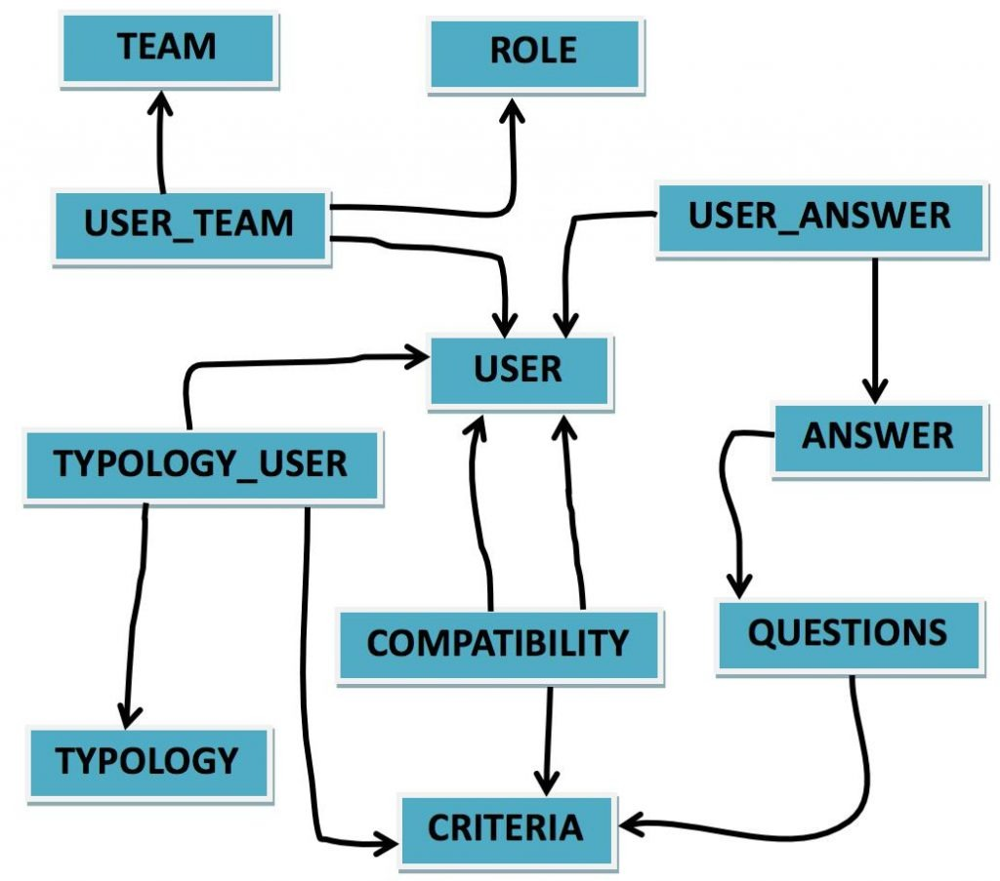
Tabelele specific bazei de date sunt:
| USER | TEAM | USER_TEAM | ROLE |
| Id_user int PK | Id_team int PK | Id_user int PK FK | Id_role int PK |
| mail varchar UNIQUE | name varchar | Id_team int PK FK | role varchar |
| username varchar UNIQUE | Id_role int PK FK | ||
| name varchar | |||
| role varchar | |||
| password char |
| TYPOLOGY | TYPOLOGY_USER | COMPATIBILITY | CRITERIA |
| Id_typology int PK | Id_user int PK FK | Id_user1 int PK FK | Id_criteria int PK |
| name varchar | Id_typology int PK FK | Id_user1 int PK FK | name varchar |
| Id_criteria int PK FK | Id_criteria int PK FK | description text | |
| percentage int | percentage int |
| ANSWER | QUESTIONS | USER_ ANSWER |
| Id_answer int PK | Id_question int PK | Id_user int PK FK |
| answer varchar | question varchar | Id_answer int PK FK |
| Id_tquestion int FK | Id_criteria int FK | user_answer int |
Implementarea bazei de date
Implementarea bazei de date s-a realizat cu ajutorul programului de lucru : Microsoft SQL Server Management Studio.
S-au creat cele 11 tabele si s-au stabilit cheile primare (Primary Keys), precum si cheile secundare (Foreign Keys).
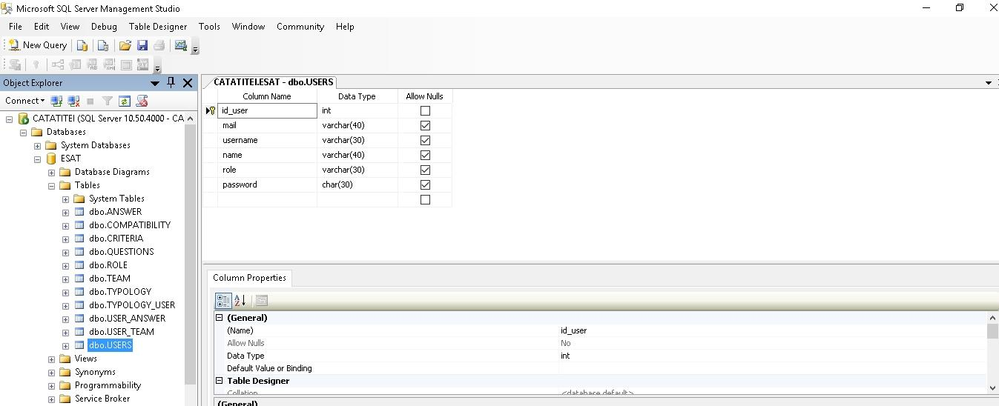
Pe baza cheilor secundare putem realiza relatii intre tabele (relationships).
Astfel, s-a generat o diagrama, cu ajutorul careia putem observa in ansamblu relatiile dintre tabele, dupa cum se poate vedea in printscreen-urile urmatoare:
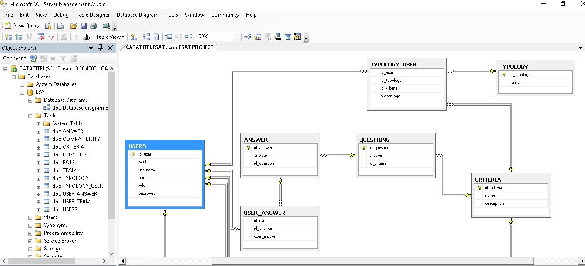
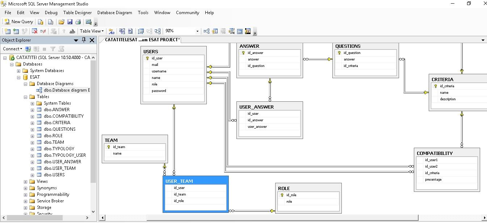
3. Algoritm de grupare pe baza teoriei rolurilor Belbin
În urma completării întrebarilor de către membri care urmează să fie integrați in Echipa Belbin putem extrage un rol principal, care poate fi ocupat de acesta în cadrul echipei, si un rol secundar, acesta putând ocupa o poziție secundară pentru anumite task-uri temporare, la nevoie, in cadrul echipei.
Astfel având la dispoziție cele 8 roluri definite de Belbin într-o echipa, după o analiză mai amănunțita a teoriei prezentate pentru fiecare rol în parte am putea face o selecție bazată pe caracteristicile, punctele forte si aptitudinile care ar facilita, de exemplu, o înlocuire a unui membru in echipa, astfel am putea avea echipe formate din 3-4 membri care să lucreze eficient și să se regăseasca de altfel toate cele 8 roluri ale lui Belbin în echipă.
Pe baza celor spuse am putea avea o listă cu “roluri principale” și o listă cu “roluri secundare”, cele secundare putând să lipsească sau nu din componența echipei formate dintr—un număr redus de persoane datorită faptului că echipa formată din membri cu “rolurile principale” pot fi selectați să aibă ca și rol secundar cele lipsă, totul însa depinzând și de nevoile echipei în realizarea țelului propus.
Algoritm grupare:
Pasi:
- Se vor prelua membri care au încheiat testul într-un vector (vector initial) care va conține date despre trăsatura primară și secundară a fiecărui membru. Se fac eventuale verificări dacă fiecare membru a completat testele suplimentare dacă se merge pe varianta de rafinare a rezultatelor (ex: bazată pe metodologii alternative).
- Numărul de echipe dorite și numărul de studenți pe echipă se vor putea specifica. (valoarea default pentru membri din echipă fiind 8). Dacă numarul de echipe dorite nu corespunde cu numarul de persoane care au rolul de COORDINATOR (CO) ca și caracteristica principală sau secundară atunci se va încerca crearea unui nr de echipe egal cu numărul de CO; Identificarea unui rol care sa fie păstrat separat (acesta sa poată înlocui rolul de CO) și adăugat ulterior cu persoanele care au rămas nealocate unei echipe.
- Definire vectori control. Daca dimensiunea echipei = 8 se vor face verificări pe întreg vectorul de membri ai echipei cu scopul completării ei cu fiecare rol. Daca dimensiunea echipei <8 se vor face verificări pe întreg vectorul de membri ai echipei cu scopul completării ei cu fiecare rol având prioritate in prima fază lista de „roluri principale” și doar pe urmă lista cu cele „secundare”. Se va utiliza un vector care va ține jurnalizarea rolurilor ocupate în echipă și a celor vacante, acesta va fi definit explicit (in cazul in care se dorește o echipa de 8 sau mai puțin de 8 persoane) ulterior după definirea listelor cu roluri primare si secundare care ar trebuie să se regăsească în echipa Belbin dacă numărul de membri este mai mic decât 8.
- Începutul acestui pas marchează începutul setului efectiv de paşi prin care se va realiza crearea echipelor de lucru. În acest pas se doreşte ca echipele să se realizeze cât se poate de uşor, într-un mod oportunistic, de tip „first in first out”. Se vor parcurge toate echipele, dacă echipa nu are nici un student asociat, se va asocia primul student care nu este asociat la niciuna dintre echipe. Daca echipa are membri in componenta însă nu este completă se caută în vectorul de jurnalizare al echipei respective pozițiile vacante iar algoritmul va căuta în vectorul de membri inițial un membru care s-ar încadra in rolul vacant. Vectorul de jurnalizare se va actualiza si se vor căuta mai departe alți membri care se pot alătura echipei. Acest pas va lua în considerare trăsătura (rolul) principal al subiectului care urmează a fi repartizat în echipa.
- În pasul curent daca mai sunt echipe cu locuri vacante se va trece la verificarea membrilor nealocați vreunei echipe. Verificarea se va face pe baza rolului (trăsăturii) secundare.
- Rafinare rezultate. În această etapă daca se identifica o metoda de a verifica compatibilitatea componentei echipei bazându-ne pe alte modalități(tipologii, metodologii) de grupare se poate rafina structura echipei făcând mici modificări daca este cazul.
- După completarea echipelor, pe baza vectorilor formați, se pot actualiza datale aferente fiecărui membru in baza de date (USER_TEAM-> Id_team,Id_role ; ROLE-> role(rol sau trăsătura primara sau secundara))
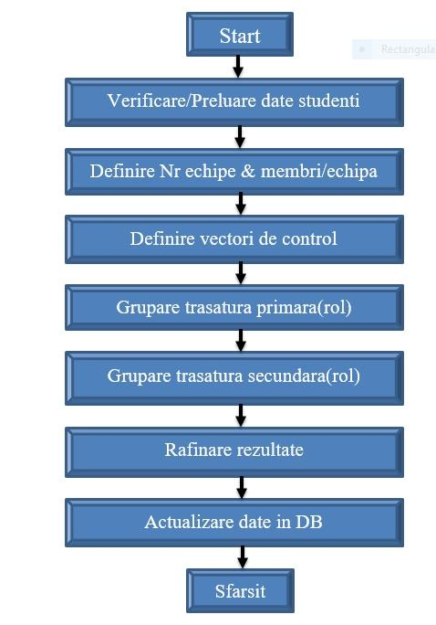
4. Implementarea aplicatiei
Implementarea aplicatiei consta din 3 parti:
- Partea de front-end
- Partea de back-end
- Baza de date
Front-endul sau graphical user interface (GUI) a fost implementat folosind HTML5, CSS3, Javascript, Jquery si AngularJS.
Partea de back-end a fost construita astfel incat aplicatia sa aiba o structura cat mai asemanatoare a aplicatiilor REST single page.
In partea de back-end a fost folosit limbajul Javascript insa cu elemente de NodeJS, ExpressJS si Mongoose pentru legatura cu bazele de date. De notat este faptul ca aceste frameworkuri sunt toate scrise in limbajul javascript, si sunt incluse in aplicatie ca niste dependinte de cod.
Baza de date este una NoSQL, numita mongoDB, intrarile de date sunt colectii de date continand documente, obiecte JSON.
4.1 Dezvoltare aplicatiei de back-end
Arhitectura aplicatiei este de tipul client – server. Aplicatia de back-end care ruleaza pe server este implementatat folosind tehnologia ASP .NET Core 2.0 si limbajul de programare C#. Tehnologia .NET Core 2.0 permite rularea aplicatilor de tip back-end pe mai multe sisteme de operare (Windows, Linux, etc.).
Arhitectura aplicatie back-end este de formatul Model-View-Controller in care se implementeaza servicii legate de operatiile cu date pentru front-end.
Pentru stocare stocarea datelor se foloseste SQL Server si SQL Server Management 2017.
Pentru flexibitatea si scabilitatea aplicatiei la nivelul de acesare a datelor se foloseste Entity Framework Core. Acest framework permite maparea claselor din aplicatie de back-end direct in tabele din SQL Server. Orice modificare a claselor care modeleaza datelele folosite de aplicatie se poate reflecta in baza de date prin creearea migrarilor.
Pentru a folosi Entity Framework, avem nevoie de o clasa Model si o clasa DbContext. Clasa Model modeleaza o anumita data din aplicatie si contine attribute care vor deveni coloane in baza de date. Mai jos este explificata clasa model pentru utilizatori. Prin atributul Table(“Users”) se specifica ca aceasta clasa va fi mapata in tabela Users.
[Table("Users")]
public class UserEntity
{
[Key]
public int UserID { get; set; }
public string UserName { get; set; }
public string Password { get; set; }
}
Pentru a se realiza maparea, aplicatia trebuie sa implementeze o clasa DbContext unde se declara sirul de caractere al conexiunii catre baza de date si clasele care vor fi declarate tabele, ca in exemplu de mai jos:
public class Context : DbContext, IContext
{
public Context(DbContextOptions options)
: base(options)
{ }
public DbSet<UserEntity> Users { get; set; }
protected override void OnModelCreating(ModelBuilder modelBuilder)
{
modelBuilder.Entity<UserEntity>().ToTable("Users");
}
}
Pentru operatiile cu baza de date s-a folosit design pattern-ul Unit Of Work si Repository.
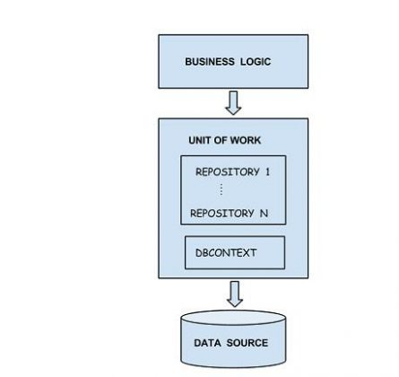
Folosind acest pattern, accesul din business logic catre baza de date se realizeaza prin intermediul unor Repository-uri care modeleaza operatiile specifice unei tabele din baza de date.
4.2 Exemple cu rularea aplicatiei
In continuare vor fi prezntate cateva capture de ecran care arata modul in care aplicatia dezvoltata a fost folosita in cateva scenarii de lucru.
Partea de Login:
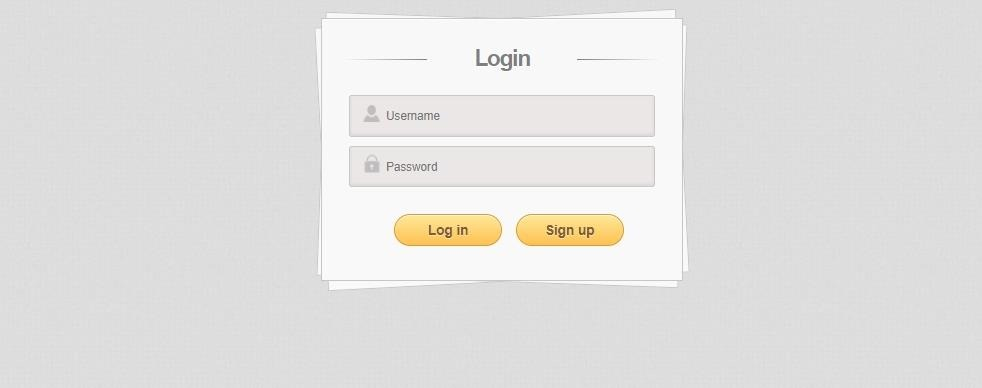
Abordare test Belbin:
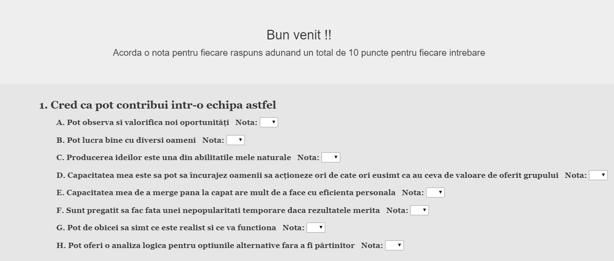
Alte intrebari specifice test Belbin:
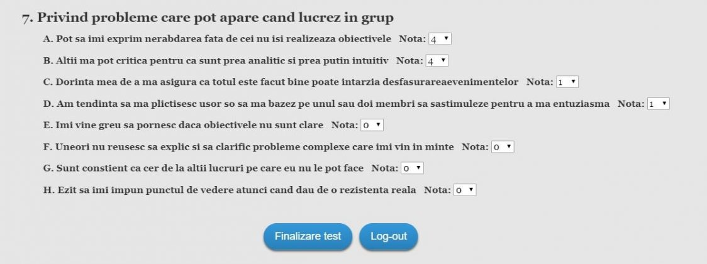
Raspuns test:
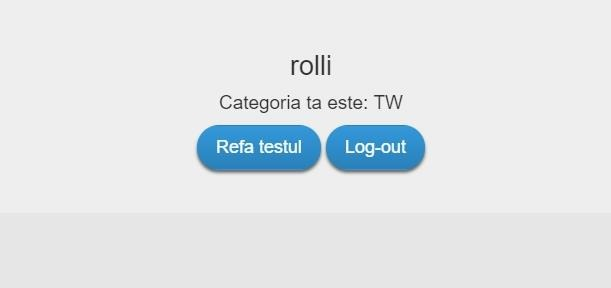
Pagina de administrare:
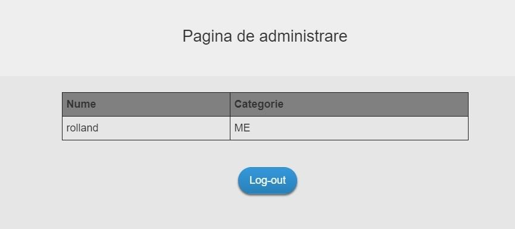
5. Concluzii
Dezvoltarea unei aplicatii dedicate gruparii optime a membrilor functie de abordarea prin modelul Belbin s-a dovedit a fi realizabila.
S-a utilizat o metodologie de dezvoltare a proiectului Agile/Scrum cu definire echipe de lucru eficiente. De asemenea au fost definite niste documente structurate : caiet de sarcini, caiet specificatii, extrase de reuniune, dupa un model de la compania Siemens care au fost completate in procesul de dezvoltare.
Sarcinile stabilite au fost:
- Echipa Product Owner (PO)– responsabil de caietul de sarcini si prioritizarea sarcinilor echipei de lucru (project manager si Dev&QA) – defineste partea de Product backlog. Definesc diagrama de Use-case si o transmit la SM. Isi realizeaza extrasele de reuniune cu clientul si PM.
- Echipa Scrum Master (SM) – Responsabila de interactiunea Product Owner – developeri. Se ocupa de caietul de specificatii si de prezentarea finala a produsului. Vor elabora si seturile de intrebari necesare Developerilor.
- Echipa Project Manager- Responsabil partea de proiectare a aplicatiei (structura : arhitectura aleasa (MVC), UI-V, Algoritmii considerati pentru grupare- C, stocare teste folosite pentru selectie, structura BD, etc.
- Echipa Developeri si QA (D&QA) – implementarea si testarea. Contin team-leaderi si aleg tehnologiile necesare.
Membrii echipelor orientate catre tematica data au fost in numar de 3-5 pe echipa si au fost alesi folosind metodologia MBTI-Enneagrama.
6. Bibliografie
- M. F. Vaida, F.C. Pop, M. Cremene, L. Alboaie, Creating Optimal Groups of Students in E- learning using Alternative Methodologies, CATE2011, Cambridge, July 11 – 13, 2011, pp.30-37
- M. Prince – Does Active Learning Work? A Review of the Research, Department of Chemical EngineeringBucknell University, 2004, pp.1-2
- Managing Groups – Blackboard 9, Teaching and Learning Center, University of Oregon, pp. 1-4
- E. J. Robertson – The effect of learning styles on group development in an online learning environment, University of North Carolina Wilmington, 2005 pp.10-40
- A. Ounnas, H. C. Davis, D. E. Millard: A Framework for Semantic Group Formation in Education, EducationalTechnology & Society, 2009, pp. 4-11
- K. Prem : Myers-Briggs Personality Type Indicator – MBTI, Career Enhancement Committee University of Wisconsin-Madison sl. 7-16
- The Enneagram: A Typology of Personality , http://www.canadianenneagram.ca/enneagram/
- Enneagram Worldwide: Enneagram 101 – „A quick-and-easy overview of the nine Enneagram types”, 2007 , pp. 3-14
- The Myers-Briggs Typology System, http://www.russellrowe.com/enneagram-type-self-assessment-22.php
- T. Flautt, J. Richards: MBTI and Enneagram – Their Relationship and Complementary Use, http://personalitycafe.com/enneagram-personality-theory-forum/60153-mbti-enneagram-their-relationship-complementary-use.html
- The Riso-Hudson Enneagram Type Indicator – Version 2.5 – 2001, pp. 3-20
- H. Friedman – Planetary Session V – MBTI Personality Test, pp. 2-134
- P. Paredes, A. Ortigosa, P. Rodriguez – A Method for Supporting Heterogeneous-Group Formation through Heuristics and Visualization, Journal of Universal Computer Science, vol. 16, no. 19 (2010), pp. 2-11
- Socionics: Easy-to-remember intertype relationship charts, Complete relationship chart between psychological (“personality”) types, 2007, http://www.socionics.com/articles/charts.htm, http://www.socionics.com/rel/relcht.htm
- A. Ounnas – Semantic Web-based Group Formation for E-learning, School of Electronics and Computer Science University of Southampton, pp. 1-5
- PHP Manual,http://php.net/manual/en/tutorial.php
- M.-F. Vaida, K.-I. Benta, Groupware Refinements for Collaborative Teams, 14th RoEduNet International Conference – Networking in Education and Research (RoEduNet NER), pp. 56-62, Craiova, sept. 2015
- Russell Rowe, Enneagram Types, http://www.russellrowe.com/enneagram-types/
- Russell Rowe, Self-awareness-self-assessments-overview, http://www.russellrowe.com/self-awareness-self-assessments-overview-21.php
- Dr. Kaylene C. Williams, Dr. Alfred R. Petrosky, and Dr. Edward H. Hernandez, THE ENNEAGRAM AND ITS POSSIBILITIES FOR STUDENT LEARNING, JBMC, April 2008 Issue
- Helen Palmer, Enneagram 101, http://newb.mu/wp-content/uploads/2016/09/Enneagram-101.pdf
- Michael J. Goldberg, The 9 Ways of Working: How to Use the Enneagram to Discover Your Natural Strengths and Work More Effectively Paperback – April 22, 1999, http://archive.org/details/9waysofworkingh00gold
- Jaxon-Bear, Eli, “Preserving the Transmission and Spiritual Context of the Enneagram.” http://leela.org/category/content-en/enneagram-articles-en/
- Nicholas Lore, The Pathfinder: How to Choose or Change Your Career for a Lifetime of Satisfaction and Success, New York : Touchstone Book, 2012.